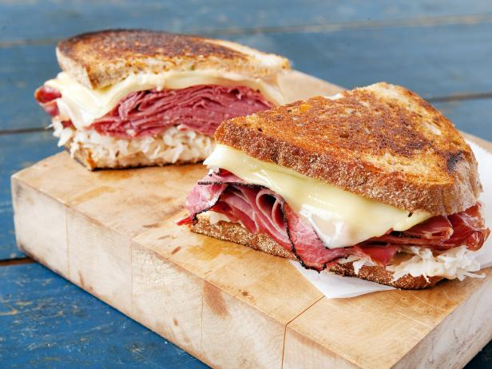

Reuban

Description
A delicious melt that many find themselves ordering in a diner!
This dish balances the fatty taste with the corned beef with saurcraut
as well as the rye bread!
A good dish for a quick yet delightful lunch!
Ingredients
- 2 tbsp butter
- 8 slices rye bread
- 8 slices deli sliced corned beef
- 8 slices Swiss cheese
- 1 cup sauerkraut, drained
- 1/2 cup Thousand Island dressing
Directions
- Preheat a large skillet or griddle on medium heat.
- Lightly butter one side of bread slices. Spread non-buttered sides
with Thousand Island dressing.
- On 4 bread slices, layer 1 slice Swiss chees, 2 slices corned beef,
1/4 cup sauerkraut and second slice of swiss cheese. Top with remaining
bread slices, buttered sides out.
- Grill sandwiches until both sides are golden brown, about 5 minutes per side.
Serve Hot.